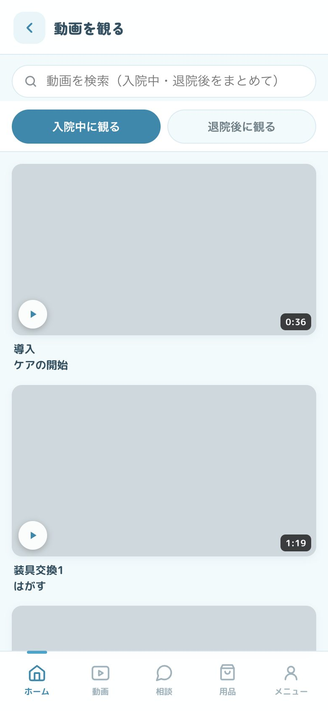
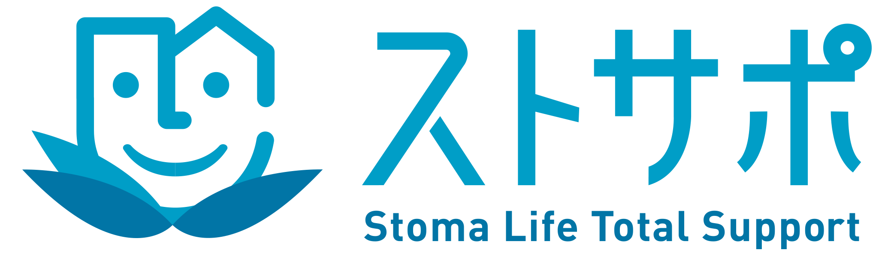
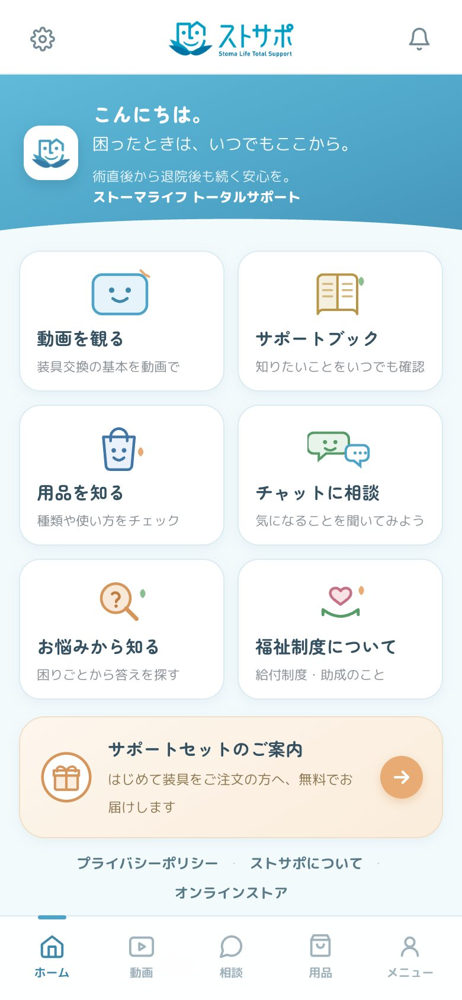
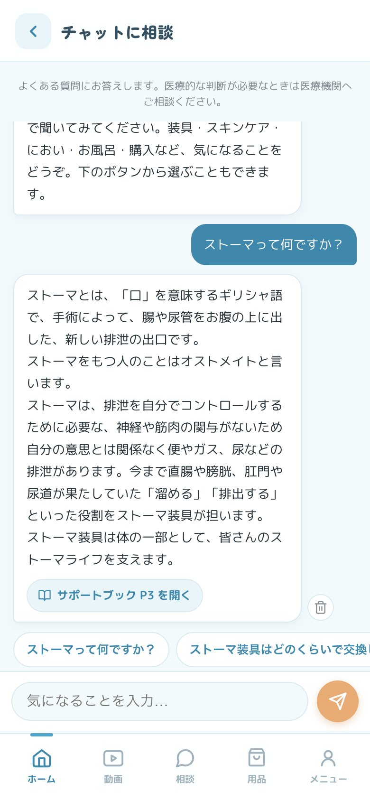
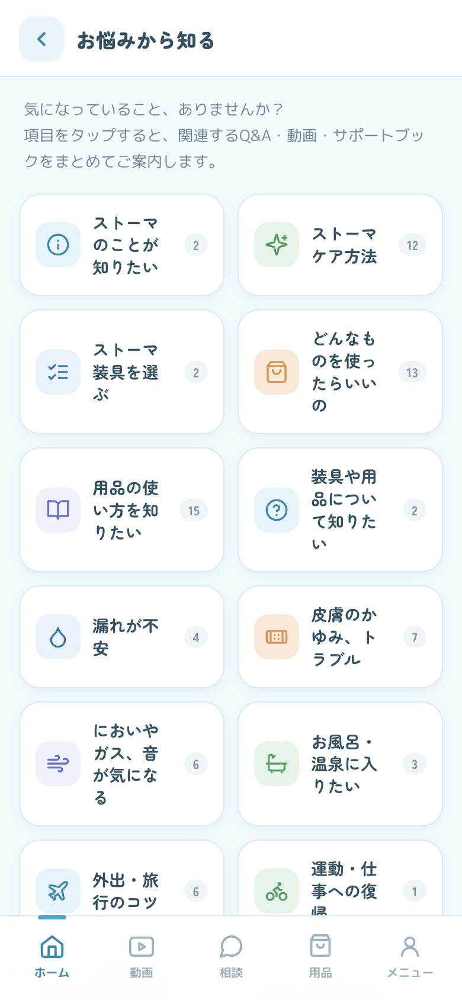
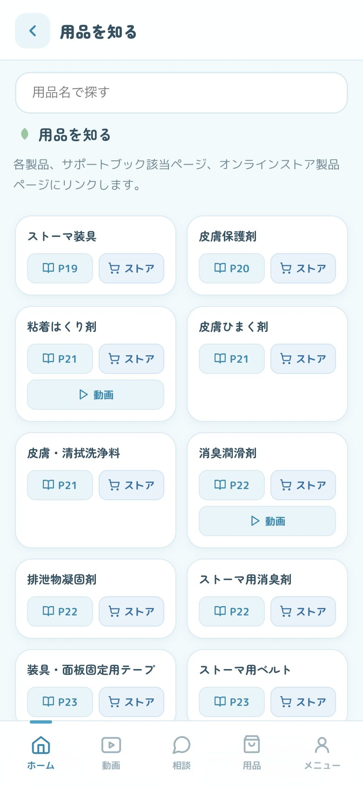

動画を観る
装具交換の手順を、1本約1分の動画で見られます。苦手な手順だけを選んで、何度でもご覧ください。

ストサポ(Stoma Life Total Support)は、患者様・ご家族が入院中から学べる、WEBアプリのセルフケア支援ツールです。
ストサポを開くダウンロードも、会員登録も要りません。スマートフォンでも、パソコンでもご覧いただけます。

MOVIE
FEATURES

装具交換の手順を、1本約1分の動画で見られます。苦手な手順だけを選んで、何度でもご覧ください。

気になることを入力すると、よくあるご質問の中からお答えします。言葉が見つからないときは、下に出るボタンからお選びください。

「漏れが不安」「においが気になる」など、困りごとから探せます。項目を選ぶと、関連するご質問と回答が並びます。

ストーマ装具とケア用品を種類ごとにご案内します。サポートブックの該当ページや、オンラインストアの商品ページへ移動できます。
冊子と同じ内容を画面でご覧いただけます。左右にめくってお読みください。文字が小さいときは、画面を指で広げると大きくなります。
日常生活用具給付券の申請と使い方をご案内します。
「教わったけれど忘れてしまった」を
「いつでも確認できる安心」へ。
FOR MEDICAL STAFF
患者様やご家族はもちろん、病棟で支援される看護師の皆様もご利用いただけます。
お問い合わせは、株式会社エム・ピー・アイ オストミー事業部までご連絡ください。